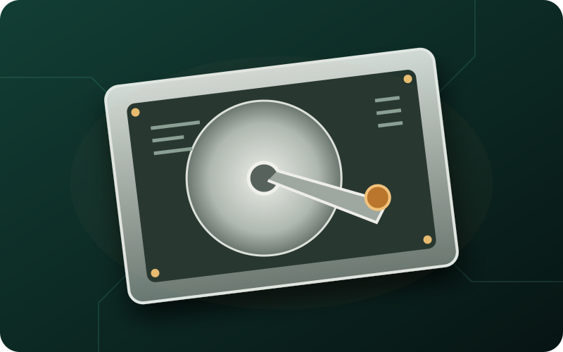

Big, low-cost storage
HDD
An HDD, or hard disk drive, keeps files and programs saved when power is off. It stores data on spinning disks inside its case.
What it does
It offers lots of space for photos, videos, and backups. It usually costs less per amount of storage than an SSD.
Where it goes
It mounts in a drive bay inside the computer case and connects with cables.